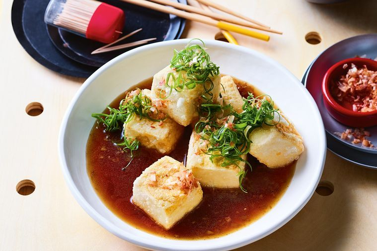

Agedashi tofu with black pepper broth

Description
This classic Japanese dish is an impressive side or light meal.
Ingredients
- 1/4 cup (60ml) kombu tsuyu (from Asian grocers – substitute soy sauce)
- 2 tbs (40g) black pepper base (recipe below)
- Vegetable oil, to fry
- 100g kuzu (cooking starch, from Asian grocers – substitute cornflour)
- 2 x 450g packets firm tofu, drained, cut into 5cm pieces
- Shaved bonito, to serve
- Slice long green shallots, to serve
Black pepper base
- 1/4 cup (60ml) grapeseed oil
- 8 eschalots, finely chopped
- 10cm piece (50g) ginger, finely grated (we used a microplane)
- 10 garlic cloves, finely chopped
- 1/2 cup (125ml) soy sauce
- 1/2 cup (110g) caster sugar
- 3/4 cup (180ml) mirin
- 50g whole black peppercorns, crushed
- 1/4 cup (60ml) black vinegar (from specialty food shops and Asian grocers)
Steps
-
For the black pepper base, heat the grapeseed oil in a medium saucepan
over medium-low heat. Add the eschalot, ginger and garlic, and cook,
stirring frequently, for 8-10 minutes until softened. Add remaining
ingredients and simmer gently, stirring occasionally, for 20-25 minutes
until reduced by half. Set aside 2 tbs of black pepper base for this
recipe. Cool remaining mixture, transfer to an airtight container and
refrigerate or freeze for another use.
-
To make the black pepper broth, combine kombu tsuyu, 2 tbs reserved
black pepper base (or to taste) and 400ml water in a medium saucepan.
Stand for 12-15 minutes, then place over medium- high heat and bring
to the boil. Turn off heat and stand for 30 minutes to infuse.
-
Meanwhile, half-fill a medium saucepan with vegetable oil. Place over
high heat and heat to 170°C (a cube of bread will turn golden in 60
seconds when the oil is hot enough). Place kuzu and tofu in a bowl and
toss gently to coat. In batches, fry tofu for 4-5 minutes until lightly
golden and crisp. Remove using a slotted spoon and drain on paper towel.
Season to taste.
-
Divide tofu among bowls and pour over broth. Scatter with shaved bonito
and sliced long green shallot to serve.